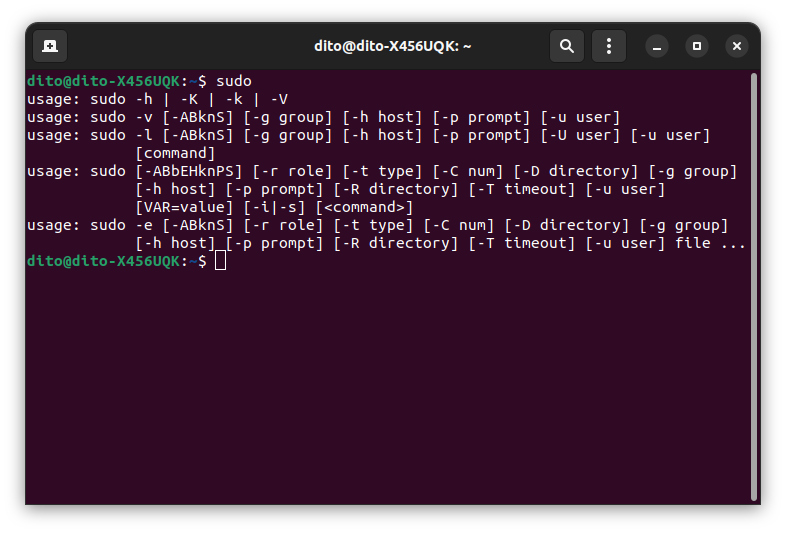
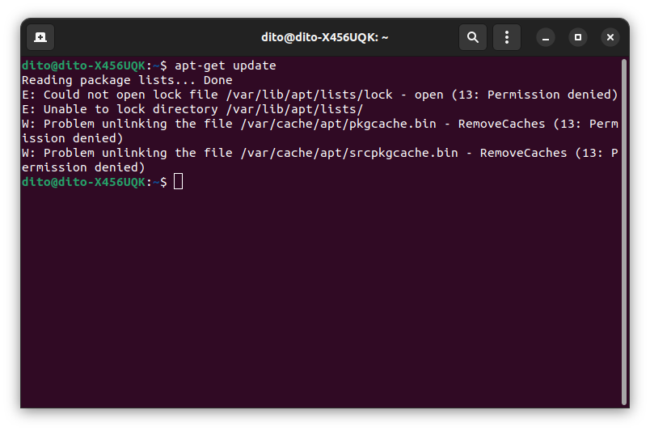
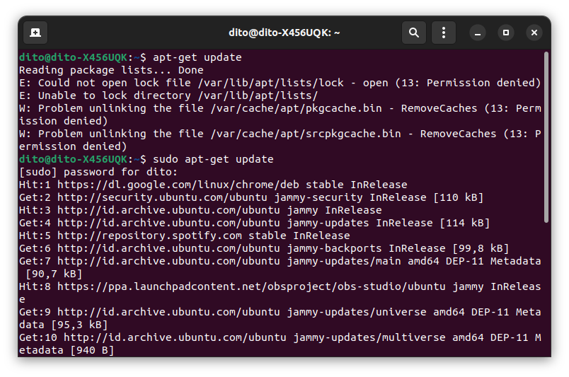

Manda R
Software Engineering
Admin
software engineering
3 min read
What is Administration role?
Admin berdasarkan Cambridge Dictionary adalah kependekan dari administrasi atau sebuah kegiatan yang terlibat dalam mengelola atau mengatur bisnis atau organisasi lain. Dalam Linux sendiri, Administrator Linux memiliki peran aktif dalam patching, compiling, securing, and troubleshooting Linux. Administrator Linux dapat melakukan pembaruan sistem dan melakukan konfigurasi sistem.
Sudo
Perintah sudo memungkinkan kita untuk menjalankan program sebagai pengguna lain, secara default pengguna root. Jika kita sering dan terbiasa menggunakan command line, sudo adalah salah satu perintah yang akan sering kita gunakan.
Menggunakan akun sudo lebih aman daripada root, karena kita dapat memberikan hak administratif terbatas kepada pengguna individu tanpa mereka tahu kata sandi root.
Package sudo biasanya sudah diinstal pada sebagian besar distribusi Linux.
Untuk memeriksa apakah package sudo diinstal pada sistem, buka terminal Linux, kemudian ketik sudo, dan tekan Enter. Jika sudo sudah terinstall di sistem, maka terminal akan menampilkan output berupa pesan bantuan singkat.

Jika belum terinstal, kita akan melihat output seperti sudo command not found. Kita dapat dengan mudah menginstal package sudo menggunakan distro package manager dengan menjalankan perintah berikut.
apt install sudo
How to use the sudo Command
Syntax
Sintaks untuk perintah sudo adalah sebagai berikut:
sudo OPTION.. COMMAND
Perintah sudo memiliki banyak opsi yang mengontrol behavior-nya, tetapi biasanya sudo digunakan dalam bentuknya yang paling basic, tanpa opsi apa pun.
Untuk menggunakan sudo, cukup awali perintah dengan sudo:
sudo command
Di mana command adalah perintah yang ingin kita lakukan dengan hak sudo.
sudo akan membaca file /etc/sudoers dan memeriksa apakah user yang meminta hak sudo ada di file sudoers. Pertama kali kita menggunakan sudo, kita akan diminta memasukkan kata sandi pengguna dan perintah itu akan dieksekusi sebagai root.
Sebagai contoh, untuk mendaftar semua file di direktori /root , kita dapat menggunakan perintah berikut :
sudo ls /root
[sudo] password for linuxid:. .. .bashrc .cache .config .local .profile
Examples of sudo in Linux
Contoh basic penggunaan sudo adalah ketika kita ingin melakukan update package repository dengan menjalankan perintah di bawah ini:
apt-get update
Kita akan melihat error message dikarenakan kita tidak memiliki izin yang diperlukan untuk menjalankan perintah.

Sekarang kita akan mencoba kembali menjalankan perintah yang sama dengan sudo:
sudo apt-get update
Masukan password saat diminta dan sistem akan menjalankan perintah dan memperbarui package repository.

Quiz
1.
Untuk mengetahui deskripsi/penjelasan lengkap dari perintah sudo, maka kita bisa memanggil di terminal, perintah
2.
Mengapa kita perlu belajar perintah sudo ?
3.
Saat kita menggunakan perintah sudo, maka akan diminta memasukkan sebuah password, password siapakah yang diminta ?